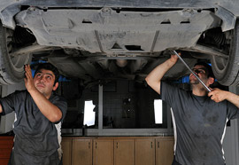
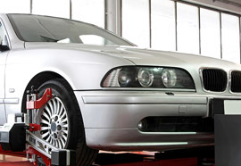

Tipos de mantenimientos
Mantenimiento preventivo
Mantenimiento correctivo

Mantenimiento predictivo

Algunos cuidados que se le pueden dar a un automóvil son:
Mantenimiento
El mantenimiento preventivo automotriz tiene varias ventajas, como: